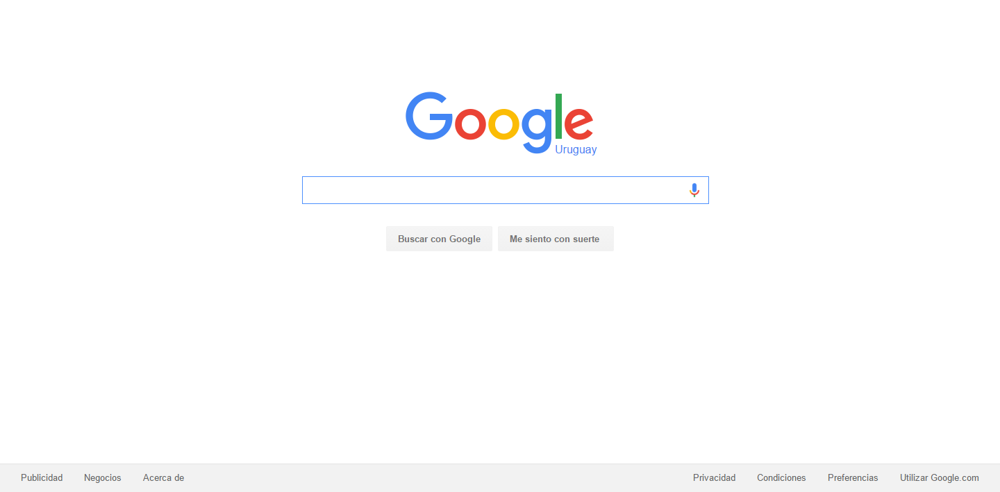
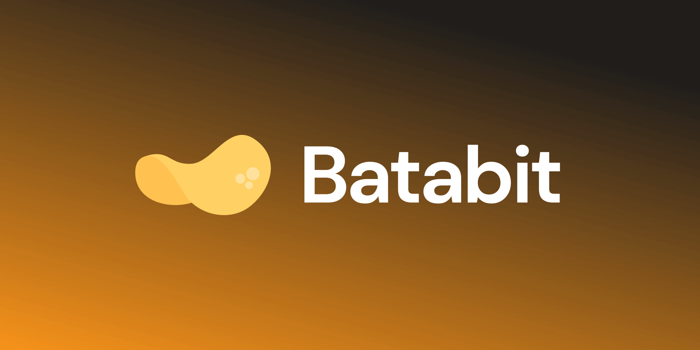

Mis Proyectos
En este apartado verás los proyectos que he desarrolado.


Clon de Google
Este es un clon de la página principal de Google. Proyecto básico, estructurado semánticamente (HTML Semántico). Estilado en su totalidad con Flexbox.
Visita el repositorio

Batatabit
Es un landing page usando Mobile First, que consta de empezar el desarrollo desde la vista para un móvil (celular) e ir adáptandolo para vistas de Tablet y Desktop. Uso de Flexbox, también tiene propiedades como el hacer un scroll horizontal para escoger un plan.
Visita el repositorio